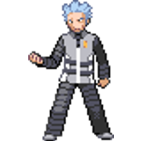
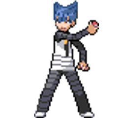
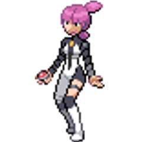
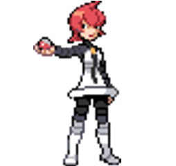

Pokémon Diamond and Pearl: Battling The Strongest Trainers
On this site, I will go over how pleasure in play arises from battling strong trainers in Pokémon and how the battle music amplifies those feelings.
This will pertain to the evil orgization, the Elite Four, and the Champion within Pokémon Diamond and Pearl.
At the beginning of this game, you get to choose between three different starters, which will play a vital role in your journey. From there, the game loop begins.
You go town to town getting stronger, collecting new Pokémon, and collecting Gym Badges.
Although this is the main goal of the game, there are usually at least three objeectives for completing the game.
The three in this series are: 1. Collect all 8 gym badges so you can gain access to the Elite Four and beat the Champion
2. Take down Team Galactic
3. Complete the Pokedex (optional)
The Evil Team Galactic
Ran by Cyrus and his three commanders, they plot to dismantle the current world and rebuild it. They want to create a world where there is no human spirit because they believe it is human emotions that ruin the world. Cyrus plans on trapping the legendary Pokémon to achieve his goal, so it falls on you to take them down.




Cyrus, Saturn, Jupiter, and Mars
Battle Music for Cyrus, Boss of Team Galactic: Battle Music for the Commanders of Team Galactic:
The Elite Four
After making your way through Victory Road, you make it to the Sinnoh League where the toughest challange awaits you. In this challenge the player must take on four of the strongest trainers in the region
and the Champion. However, it will not be like any other battle you have come across. In this tournememnt you lose access to the ability to go heal your team or restock on consumbles inbetweent the battles.
Aaron, Bertha, Flint, and Lucian.
Battle Music for Elite Four:
Cynthia: Champion of the Sinnoh League
After beating the Elite Four you are left with one last obsticle in your way, Cynthia.
All the trials and tribulations have faced throught out your journey has lead to this momement.
You have trained over-and-over again and now it is time to put all your knowledge to the test
Champion's Battle Music:
Here is a video of what the battle between you and Cynthia looks like:
Losing = Fun?
Throughout your journey, you will come across different types of trainers who vary in team comps and strength.
Sadly, you cannot always win, especially on your first try. However, the game does not hinder your growth, but losing is not without consequence.
If you lose, you lose around 10% of your money, and in some cases, you lose friendship value with the Pokémon on your team. The game loop demonstrates Lindley's concepts of play and pleasure.
The first, "Play is a 'Vorubung und Einubung' of activities which soon are to be necessary to the serious life of the adult animal."(1)
The second, "...pleasure in triumphing over obstacles, the joy in success, victory."(1)
This concept is important when thinking about the reasons behind why we put ourselves through the grind.
We want to succeed and feel the joy of overcoming difficult challenges.
While it is the loop that is invoking this emotion, the battle music enhances that feeling and helps drive you to success.
It is the music that helps transport us into the world of our character.
Why Does This Matter To Me?
Mostly, this is a game from my childhood and feels nostalgic. I remember my young self playing for days, struggling and training my Pokémon so I could take on the stronger battles.
It was fun building my team, collecting stronger/rarer Pokémon, and even bonding with them.
Although this game might not have been real to others, it was real to me.
The experiences and feelings I had while playing and bonding with my friends felt real to me.
These connections and feelings correlate to Baudrillard and his work Simulacra and Simulation.
He states, "The imaginary of Disneyland is neither true nor false, it is a
deterrence machine set up in order to rejuvenate the fiction of the real in the opposite camp."S (2)
This idea of both reality and simulation being equal makes the existence of those experiences and feelings feel more real than the reality I am living in.
The bonds I created and trials I overcame were not mere simulations but an extension of my reality.
Notes
1.
Lindley, E. H. (1897). A Study of Puzzles with Special Reference to the Psychology of Mental Adaptation. The American Journal of Psychology, 8(4), 431–493. https://doi.org/10.2307/1411772
2.
Baudrillard, J. (1994). Simulacra and simulation. University of Michigan Press. https://dn720006.ca.archive.org/0/items/baudrillard.-1970.-the-consumer-society/Baudrillard.1981.Simulacra-and-Simulation.pdf
Main Image: Ashworth, M. (2020, April 22). Retro ad replay - Pokemon diamond and pearl's 13th anniversary. GameRevolution. https://www.gamerevolution.com/originals/644064-pokemon-diamond-and-pearl-release-date-13th-anniversary
Sprite Images: Pokemon Wiki. (n.d.). Pokémon Wiki | Fandom. Retrieved January 6, 2026, from https://pokemon.fandom.com/wiki/Pok%C3%A9mon_Wiki
Music: Pokemon diamond & Pokemon pearl: Super music collection : Junichi Masuda : Free download, borrow, and streaming : Internet archive. (2006, December 22). Internet Archive. https://archive.org/details/pkmn-dppt-soundtrack